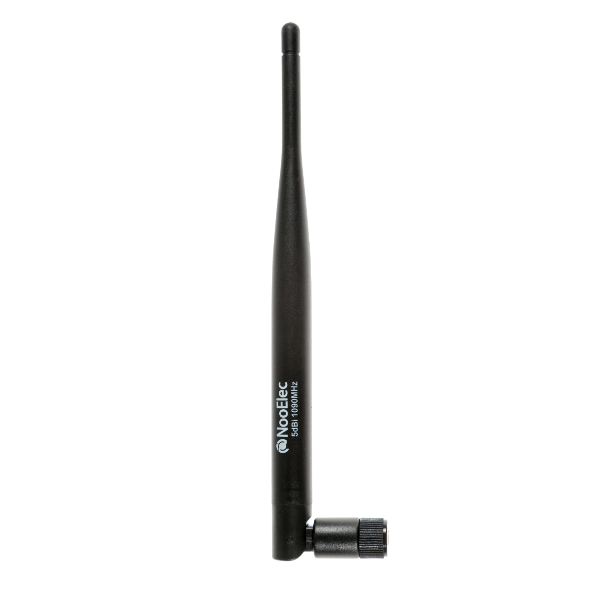
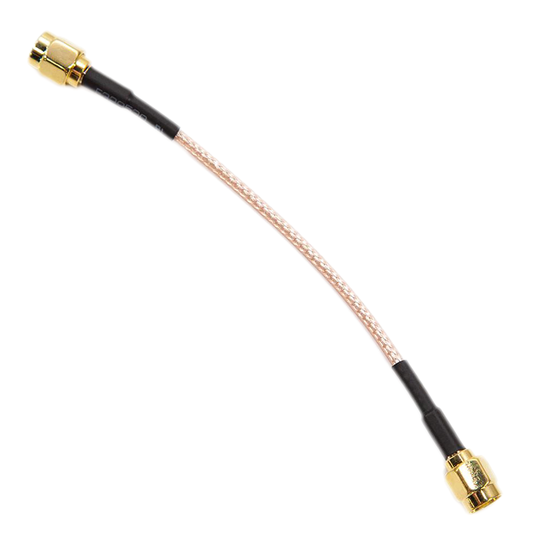

Home / Detection Electronics / 1090 + 978 kit
Field attach · Antenna kit
Dual-Band 1090 / 978 Receive Antenna Kit
$59 ships from us after payment
- 1090 MHz SMA whip, 5 dBi class
- 978 MHz SMA whip, 5 dBi class
- Short SMA male-to-male jumper (unfiltered)
- No second radio. No filter. No 2.4 / 5.8 antennas
Sold by Dark Sky Systems LLC. Card via Stripe.